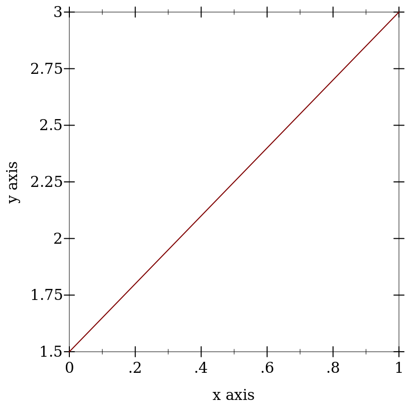
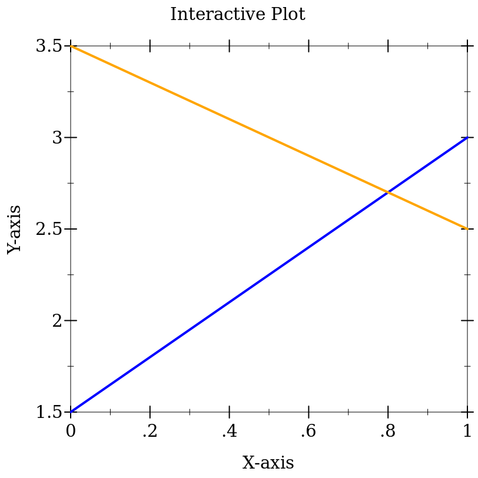

3 Basic Recipes
Inspired by the Matplotlib Cookbook, this section contains some recipes that begin at the very beginning.
NOTICE: All of the code in this section is designed to be used with #lang racket. If you use racket/base you will need to require more libraries.
3.1 Two Points
A line through (0, 1.5) and (1, 3).
> (require plot)
> (plot (lines (list (vector 0 1.5) (vector 1 3.0)))) 
Thicker and more colorful lines, with axes labels and a title.
> (require plot)
> (parameterize [(line-width 2)] (plot (list (lines (list #(0 1.5) #(1 3.0)) #:color 'blue) (lines (list #(0 3.5) #(1 2.5)) #:color 'orange)) #:title "Interactive Plot" #:x-label "X-axis" #:y-label "Y-axis")) 
3.2 Getting Data
I advise using the "data-frame" package to import your data. It is easy to work with and does not require dropping into "lower level" operations to do things like parse strings into numbers.
One way to get data from an external source is to write it to a CSV file. The file would look like this:
x,y |
1,1 |
2,4 |
3,9 |
4,16 |
5,25 |
Using (df-read/csv "filename.csv") is best choice. Use a header row to specify column names.
A single string that crosses multiple lines is the next best choice. For example, you could copy and paste the comma-separated x and y coordinates into the string.
Embedded \n are used below just to save space in the example.
The df-select* function is used to extract the specified columns from a data frame and turn them into a list of vectors, one for each row. This format is suitable for lines.
> (require plot data-frame) > (define csv-data "x,y\n1,1\n2,4\n3,9\n4,16\n5,25") > (define csv-port (open-input-string csv-data)) > (define df1 (df-read/csv (open-input-string csv-data))) > (close-input-port csv-port) > (plot (lines (df-select* df1 "x" "y"))) plot: undefined;
cannot reference an identifier before its definition
in module: top-level
Note: a fancier way to read the data is the one liner (call-with-input-string csv-data df-read/csv), but it is a little harder to understand and modify.